O lençol apresenta uma imagem dupla, frontal
e dorsal, de um homem nu, em 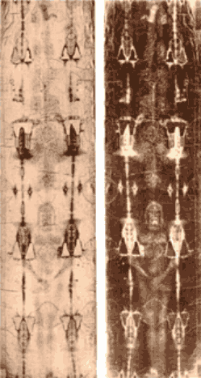
O historiador inglês Ian Wilson foi o primeiro a observar o formato da longa mecha de cabelo que cai sobre o meio das costas do homem do Sudário. Ela se assemelha a uma trança desmanchada. Trançar os cabelos atrás do pescoço era uma moda comum entre os homens judeus no tempo de JESUS. No Lençol Mortuário, as numerosas marcas de ferimentos que aparecem, revelam que o homem foi brutalmente açoitado, coroado com espinhos, crucificado e perfurado por uma lança no lado direito do tórax. Pierre Barbet, cirurgião francês do hospital Saint Joseph de Paris, assim como outros especialistas em anatomia e medicina legal, estudaram exaustivamente essas marcas e concluíram que elas correspondem, nos mínimos detalhes, às narrativas sobre a flagelação, morte e sepultamento de JESUS, conforme estão descritas nos versículos dos Evangelhos. E que também, elas acrescentam informações desconhecidas pela tradição cristã, que são confirmadas pela recente pesquisa histórica e arqueológica, como por exemplo, o fato do crucificado ter sido pregado à barra horizontal da cruz pelos pulsos e não pelo meio das mãos, conforme as pessoas imaginavam.
Em 1973, o Vaticano permitiu que fosse extraída uma pequena amostra do Sudário para pesquisa e avaliação. O estudo microscópico confirmou que o Lençol era de linho, tecido em padrão espinha de peixe 3x1, com traços de algodão.
Nesta mesma época, Dr. Max Frei-Sulzer,
médico suíço, especialista em criminologia e botânica, fez uma notável descoberta.
Ele é a maior autoridade mundial na identificação de polens. Afirmou Dr. Max, que
toda flor produz um pólen que é diferente dos polens das demais. Como exercício
de pesquisa, ele costumava examinar roupas no microscópio para saber de onde
vieram ou onde estiveram, identificando os polens que existiam grudados nelas. O
pólen, segundo o cientista, tem uma parede protetora que faz com que ele se
mantenha inalterado por milhares de anos. Autorizado pela Igreja, estudou os
polens que se encontram no Sudário, retirando-os da superfície da Mortalha com
o auxílio de fita adesiva. Após quatro anos de pesquisa, identificou 48 tipos
diferentes de polens e que a Mortalha tinha estado na Turquia e em outros paises
da Europa (Alemanha, França e Itália) e por isso, decidiu viajar a Jerusalém,
para conhecer a flora e vegetação de Israel. Pesquisando as plantas daquela
região, descobriu oito tipos diferentes, cujos polens se encontram na 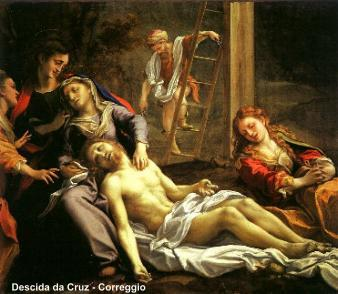
De acordo com o cientista suíço e o grupo de pessoas que trabalhavam com ele, no encerramento das pesquisas concluíram:
"Não foram encontradas pinturas, tinturas ou manchas nas fibras. Pelas radiografias realizadas, também através de fluorescência e por micro química aplicada às fibras do tecido, foi excluída a possibilidade da imagem ter sido pintada. A avaliação feita com raios ultravioletas e infravermelhos confirmam plenamente o resultado dos estudos realizados".
"Também, a avaliação micro química não indicou qualquer evidência de especiarias, óleos ou elementos bioquímicos passíveis de serem produzidos pelo corpo em vida ou na morte. O tecido estava em contato direto com um corpo, o que explica certas características, como marcas de açoite e de sangue".
O botânico israelense Avinoam Danin da Universidade Hebraica de Jerusalém, após pesquisar as plantas e flores de Israel, entre elas crisântemos que foram identificados no Santo Sudário pelos pesquisadores norte-americanos Alan e Mary Whanger, concluiu que o Sudário foi tecido em Jerusalém. O botânico afirmou à televisão Norte Americana CBS, que não é de sua competência afirmar se foi aquele Lençol que envolveu o corpo de JESUS, porém não tinha dúvidas quanto à origem do tecido. Danín confirmou que o Lençol foi confeccionado em Israel na época de CRISTO, pois as plantas e flores cujos polens se encontram nele, só crescem no deserto do Sinai, na Jordânia e entre Jericó e Jerusalém. Além disso, estas plantas só produzem o pólen na primavera, o que coincide com a época em que, segundo a Bíblia, JESUS morreu crucificado. O botânico completou sua entrevista informando que na Síndone foram identificados vestígios de diversos tipos de polens, entre eles, o pólen da planta "Zhigofilum dumosum", que só cresce nas redondezas de Jerusalém.
Por outro lado, também ficou constatada
a presença de partículas de sangue na Mortalha, tão admiravelmente conservadas
que permitiram a identificação da 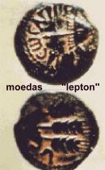
Em 1978, o biofísico americano John Heller, fazendo exames no tecido, descobriu que o Sangue do Sudário era humano do tipo "AB" universal.
Em 1981, Padre Francis Filas, professor na Universidade de Loyola em Chicago nos USA, aumentando 20 vezes a fotografia do rosto do homem do Sudário, constatou que havia "uma moeda" sobre a pálpebra do olho direito. Era um costume judeu de colocar uma moeda sobre as pálpebras de cada olho para manter o morto com os olhos fechados. Verificou ainda que a moeda tinha o nome de Tibério César, escrito em grego, igual às moedas que circulavam em Jerusalém no tempo de Poncio Pilatos.
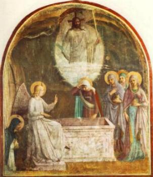
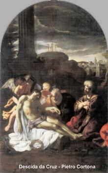
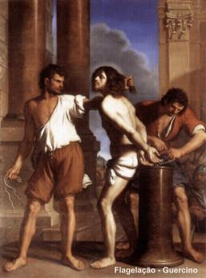
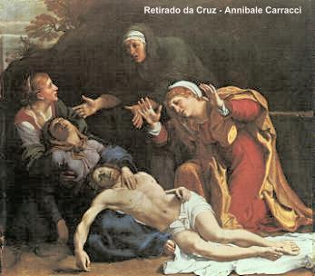
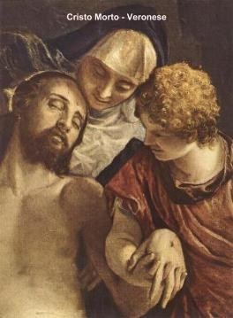
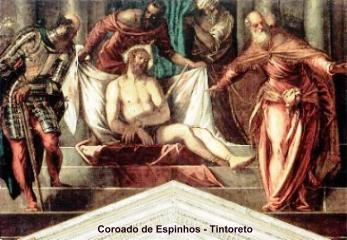
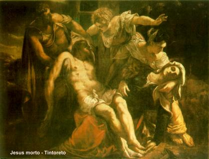
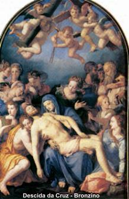
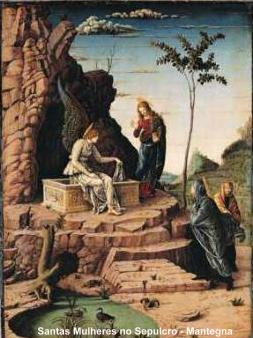
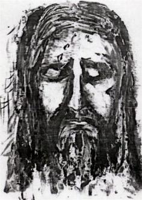